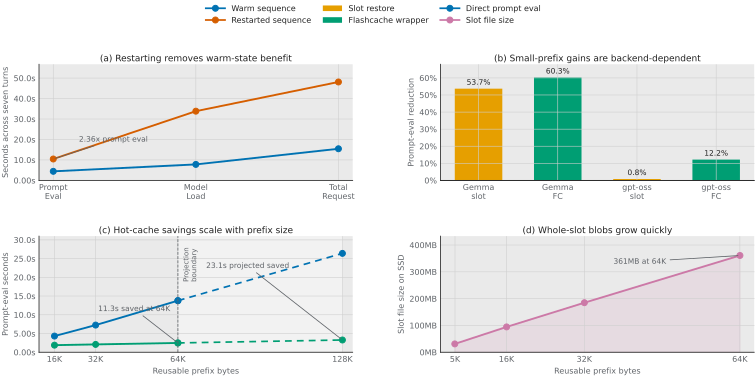
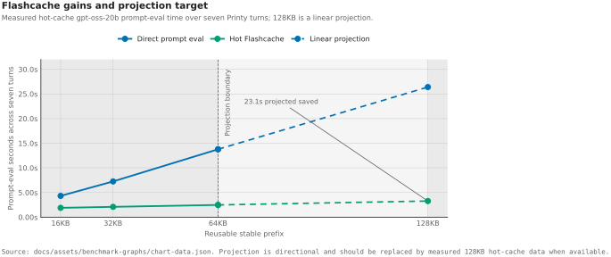
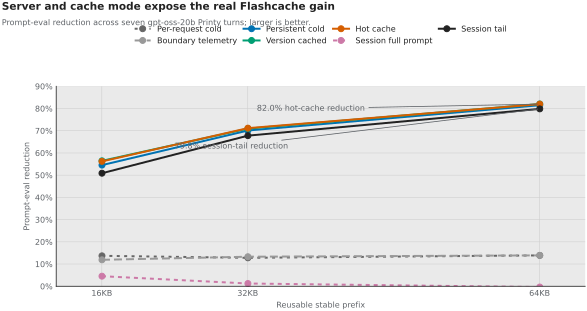
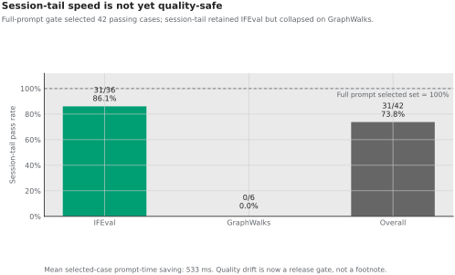
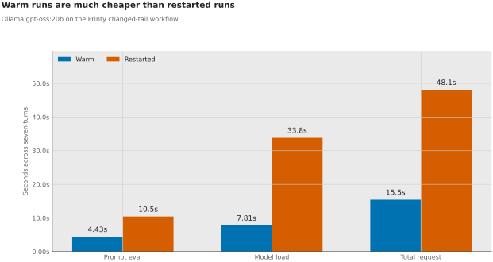
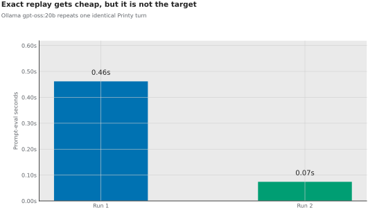
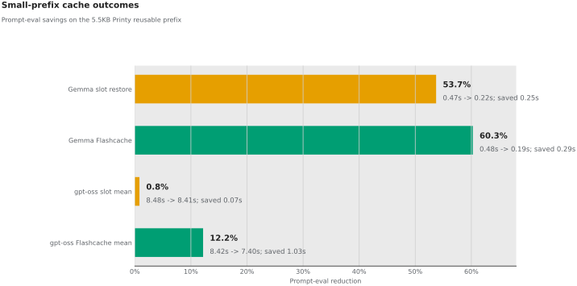
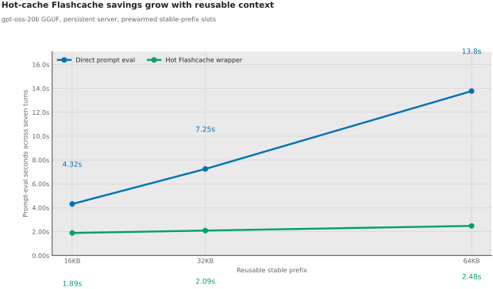
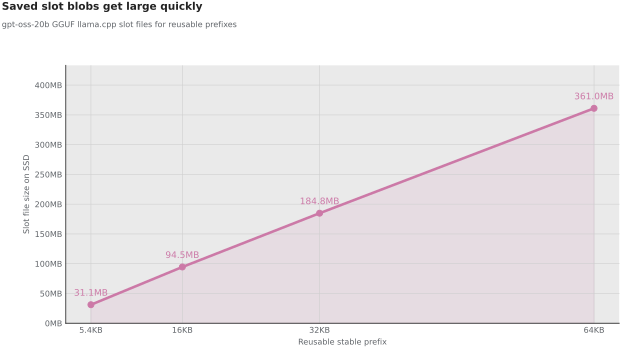

Abstract
This report summarizes what the Flashcache experiments show so far. The speed evidence is strong enough to continue: large stable agent prefixes can be made much cheaper to reuse, with the 64KB hot-cache and session-tail fixtures reducing prompt-eval time by about 82.0% and 79.8%. The quality evidence is the new constraint: session-tail passed 31/42 full-prompt-passing correctness cases, including 31/36 IFEval cases but 0/6 GraphWalks cases. The research direction is therefore not generic SSD caching. It is quality-gated persistent inference-state reuse for local agents: use SSD-backed state when it is safe, recompute or fall back when quality risk is high, and explain the failure modes.
Research Thesis
Local agents repeatedly combine a stable prefix with a volatile tail. Stable context includes system rules, tool schemas, repo summaries, memory blocks, and workflow scaffolds. The volatile tail includes tool output, diffs, commands, and the next task state. Flashcache asks whether that stable state can become reusable inference state instead of text that the model must reprocess every turn.
The speed signal is real.
Persistent, hot-cache, and session-tail runs show that reusable-prefix savings become much clearer once process startup, cold cache-fill noise, and full-prompt replay are separated.
The quality gate failed.
The current session-tail protocol preserves many instruction-following cases but collapses on selected GraphWalks cases, so speed cannot be treated as sufficient.
The paper wedge is narrow.
KV caching and SSD offload already exist. The candidate contribution is a correctness contract and fallback policy for local, non-frontier agent loops.
Current verdict: Flashcache has crossed the first threshold, because repeated stable context can be made substantially cheaper. It has not crossed the second threshold, because restored-prefix and tail-only execution are not yet quality-safe for reasoning-over-prefix tasks.
| Research question | What current data says | What remains unknown |
|---|---|---|
| Can SSD-backed state reduce repeated local-agent prefill? | Yes, especially in hot-cache and session-tail modes on 64KB stable prefixes. | Whether lower-level partial restore can reduce slot size and restore overhead. |
| Can session-tail preserve full-prompt quality? | Not yet. It passed 31/42 selected full-prompt-passing cases. | Which failures come from the model, prompt protocol, scorer, or cache semantics. |
| What makes this publishable? | The strongest topic is quality-gated persistent KV reuse for local agents. | Whether a fallback or partial-recompute policy preserves quality while keeping most speedup. |
Primary Figures
Figure 1 combines the current evidence into a single paper-style panel. Solid lines and bars are measured data; dashed lines mark directional projection.

{kind=link}
{kind=link}

{kind=link}
{kind=link}

{kind=link}
{kind=link}

{kind=link}
{kind=link}
Computed Results
These are the numeric claims used by the figures. Projection values are marked separately from measured values.
| Claim | Direct / baseline | Cache / target | Delta |
|---|---|---|---|
| Warm vs restarted prompt eval | 10.46s restarted | 4.43s warm | 2.36x gap |
| Exact replay control | 462ms first run | 74ms second run | known primitive |
| gpt-oss-20b small-prefix Flashcache | 8.42s | 7.40s | 12.2% saved |
| 64KB per-request cold Flashcache | 81.95s | 70.56s | 13.9% saved |
| 64KB hot-cache Flashcache | 13.77s | 2.48s | 82.0% saved |
| 128KB hot-cache projection | 26.4s projected | 3.27s projected | 23.1s projected saved |
| 64KB whole-slot SSD cost | 64KB reusable prefix | 361MB slot file | optimize layout next |
| Correctness selected set | 42/42 full prompt | 31/42 session-tail | quality gate failed |
| IFEval selected cases | 36/36 full prompt | 31/36 session-tail | mostly preserved |
| GraphWalks selected cases | 6/6 full prompt | 0/6 session-tail | reasoning collapse |
Research Program
The next paper-oriented phase should test mechanisms, not only faster timings. The immediate goal is to explain when session-tail diverges from full-prompt execution and to design a cache policy that can choose reuse, partial recompute, or full-prompt fallback by task risk.
| What we are trying to find out | Smallest useful next test | Why it matters |
|---|---|---|
| Are GraphWalks failures model weakness or cache/session drift? | Rerun the six selected GraphWalks failures with full-prompt replay, visible-prefix session formatting, stronger answer hints, and scorer-brittleness checks. | This separates model limitations from a real cache semantics problem. |
| Can deliberate recompute repair quality? | Recompute small anchor spans such as task instructions or graph schema while restoring stable agent context. | A small amount of "inefficient" recompute may recover quality while keeping most cache savings. |
| Can the system route risky turns to full prompt? | Use task family and prompt-role metadata to choose session-tail, partial recompute, or full prompt before generation. | The publishable claim is a quality-gated cache policy, not a cache-hit counter. |
| Can whole-slot blobs become block-level state? | Measure which prefix roles are reusable, hot, risky, or disposable; then design block roles before changing runtime code. | The 64KB slot is already about 361MB, so lower-level layout matters for ordinary machines. |
Harness Validation Path
The next credible proof is an applied agent harness, not another isolated prompt-cache demo. The baseline should run the local model with the normal Markdown files injected or retrieved in the usual way. The treatment should run the same model, same files, same tasks, and same tools, but with the stable context loaded through Flashcache.
| Metric | Why it matters | Acceptance signal |
|---|---|---|
| Prompt-eval and wall-clock time | Shows whether cached context makes local loops practically faster | Large repeated-context savings without hidden setup cost dominating the run |
| Workflow completion rate | Shows whether the agent remains useful, not merely fast | Equal or higher success on fixed OpenClaw/DeepClean-style tasks |
| Quality and regression checks | Prevents a cache optimization from masking bad edits or worse reasoning | Tests, CI, review outcomes, and task-specific graders stay comparable or improve |
| Resource footprint | Determines whether regular machines can afford the cache layer | SSD size, restore time, and eviction behavior remain bounded |
Supplementary Figures
The individual plots remain available for inspection and regression checks. They are generated from the same script and exported in SVG, PDF, and PNG formats.





Methods And Reproduction
Figures are generated by benchmarks/plot_benchmark_graphs.py from raw benchmark JSON and correctness summaries. The computed table is written to docs/assets/benchmark-graphs/chart-data.json.
python3 -m pip install -r requirements-dev.txt
python3 benchmarks/plot_benchmark_graphs.py
Source inputs are under benchmarks/datasets/printtestbot-printing-press-2026-06-02/raw/, benchmarks/datasets/printtestbot-large-prefix-2026-06-02/raw/, benchmarks/datasets/printtestbot-boundary-telemetry-2026-06-03/raw/, benchmarks/datasets/printtestbot-persistent-server-2026-06-03/raw/, benchmarks/datasets/printtestbot-server-version-cache-2026-06-03/raw/, benchmarks/datasets/printtestbot-hot-cache-2026-06-03/raw/, benchmarks/datasets/printtestbot-session-cache-2026-06-03/raw/, benchmarks/datasets/printtestbot-session-tail-2026-06-03/raw/, and benchmarks/datasets/flashcache-correctness-parity-2026-06-03/summary.json. The next measurement round should split prefill, restore, save, SSD read/write bytes, memory copy, accelerator upload, changed-tail evaluation, task-family correctness, and fallback decisions inside an explicit session API.